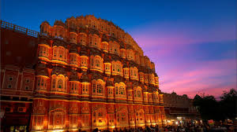
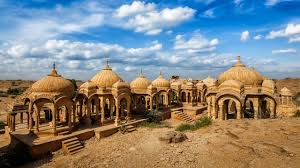
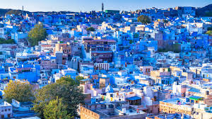
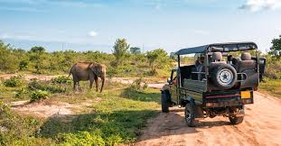

Jaipur

The state capital, famous for its grand palaces, forts (like Amer Fort), vibrant bazaars, and its distinctive terracotta pink architecture.
Udaipur

Known for its picturesque lakes, grand palaces (like City Palace), and romantic setting, particularly the Lake Pichola with the famous Lake Palace (Jag Niwas).
Jaisalmer

Famous for the stunning Jaisalmer Fort (a UNESCO World Heritage Site and a living fort), its golden sandstone architecture, and camel safaris in the Thar Desert.
Jodhpur

Known for the magnificent Mehrangarh Fort, which overlooks the blue-painted houses of the old city, offering a striking contrast and unique photo opportunities.
Ranthambore National Park

One of the most famous and largest national parks in Northern India, renowned for its large tiger population, offering excellent wildlife viewing opportunities.